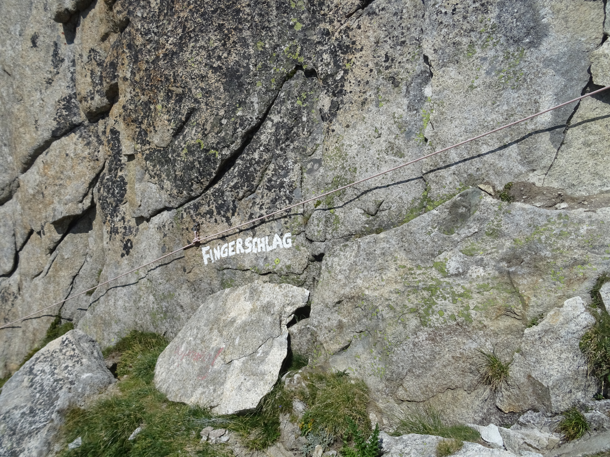
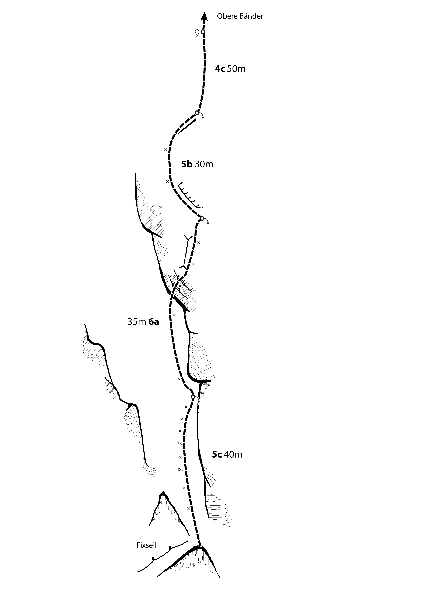

Fingerschlag
Erschliessung: D. Anker und P. Nigg, 1985
Sanierung: 2010
Beschreibung
Eine etwas kürzere, aber sehr schöne Route mit sehr kurzem Zustieg. In der ersten Seillänge sind ziemlich viele Haken zu finden. Ebenfalls ist die Schlüsselstelle über einen Aufschwung gut mit Bohrhaken abgesichert. Die Stände bestehen aus einem Muniring, nach der letzten Länge gibt es nur eine Schlinge mit Maillon Rapide.
Zustieg
Wenige Minuten von der Hütte dem Weg nach Nordwesten folgen, danach entlang eines Fixseils zum Pfeiler aufsteigen.
Abstieg
Es kann entweder über die Route abgeseilt werden, oder auf „Obere Bänder“ ausgestiegen werden. Die oberste Seillänge eignet sich nicht zum Abseilen, weshalb empfohlen wird, nach drei Seillängen bereits abzuseilen.

Fingerschlag am Jägihorn
Topo
